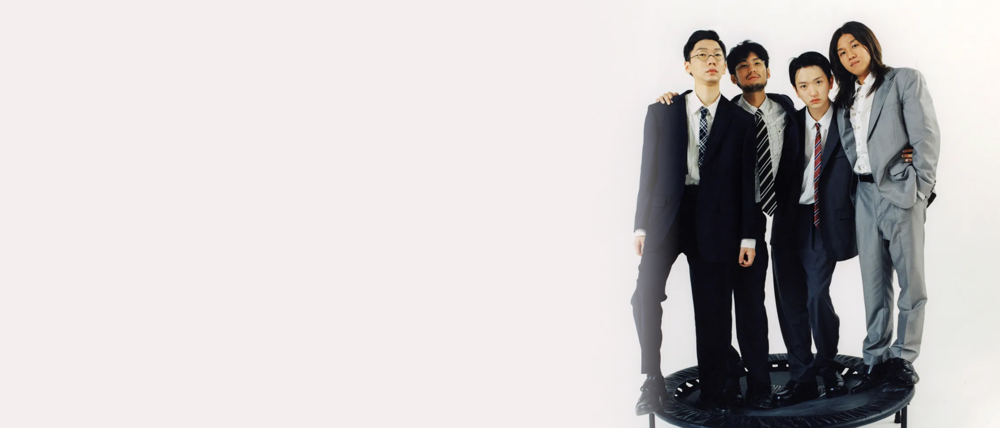
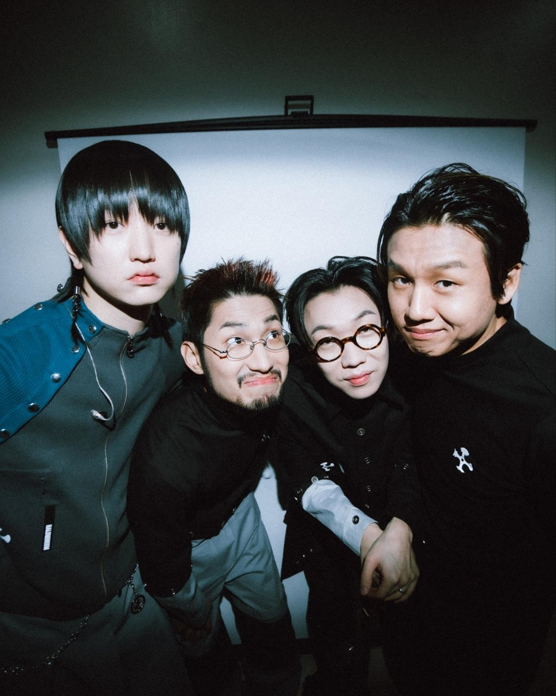
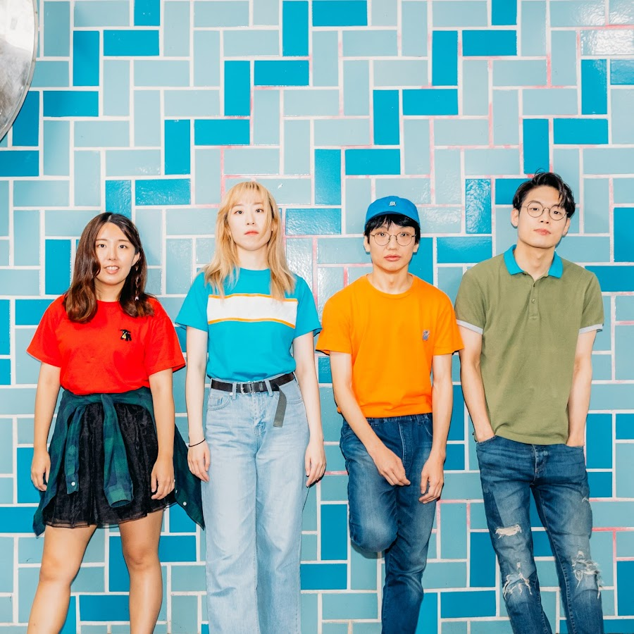
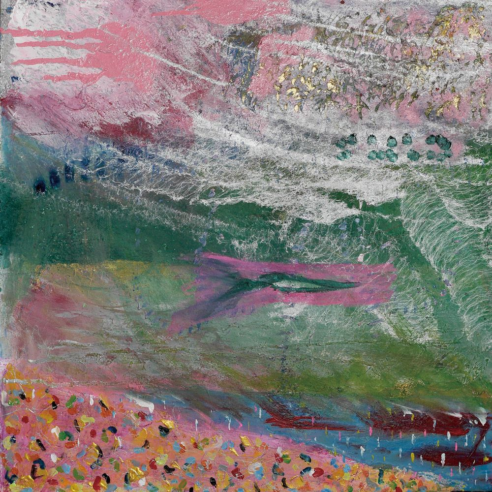

사이키델릭 록
사이키델릭 록은 1960년대 후반의 록 음악에서 가장 큰 영향력을 미쳤던 장르로, 몽롱하고 환각적인 느낌을 표현하고자 했던 음악을 말한다. 1965~6년에 발표한 비틀즈의 'Rubber Soul'과 'Revolver' 앨범 및 싱글들부터 사이키델릭 록의 초창기가 시작되었다.
아티스트

실리카겔
실리카겔은 2015년에 데뷔한 대한민국의 4인조 록 밴드이다.
사실 실리카겔은 사이키델릭 록 장르만이 주 장르가 아니라,
포스트 록·익스페리멘탈 록·모던 록 장르 등 각각 취향이 다른 멤버들을 배려해 매번 다양한 장르를 다룬 앨범을 발매한다.
감각적이고 신비로운 사운드로 젊은 사람들에게 인기를 끌고 있다.

전자양
전자양은 2001년에 데뷔한 대한민국의 4인조 인디 밴드이다. 우울한 듯 몽롱한 듯 한 포크 감성에 다양한 전자음 노이즈를 섞었다.
홈레코딩의 주역인만큼 로우파이한 만듦새가 또 하나의 특징이다.
특이한 분위기와 가사가 더해지며 기묘한 분위기를 낸다.
포크 음악 풍과 기묘한 전자음의 곡까지 넓은 스펙트럼을 보여준다.

산울림
산울림은 1977년에서 2008년까지 활동했던 3인조 형제 밴드이다.
아이유와 '너의 의미'를 곡을 발매한 김창완이 보컬과 기타를 맡았고, 둘째 김창훈이 베이스를, 막내 김창익이 드럼 포지션을 맡았다.
산울림은 대한민국 사이키델릭 록의 시초라고 할 수 있다.
특히 1집에서 3집 앨범이 완전한 사이키델릭의 정석이다.
음악

sister
실리카겔

던전2
전자양

어느날 피었네
산울림